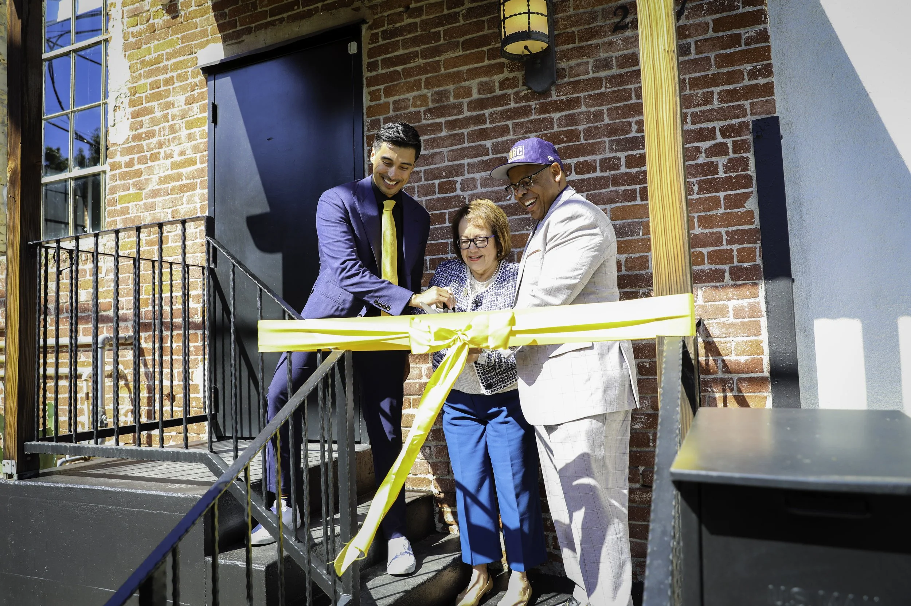
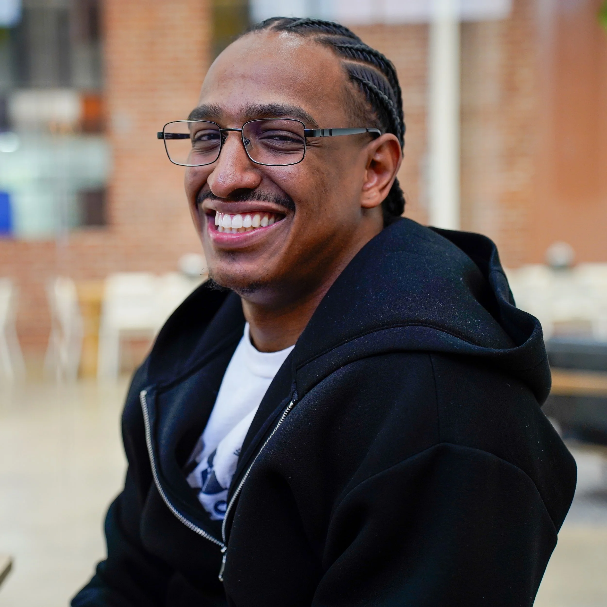
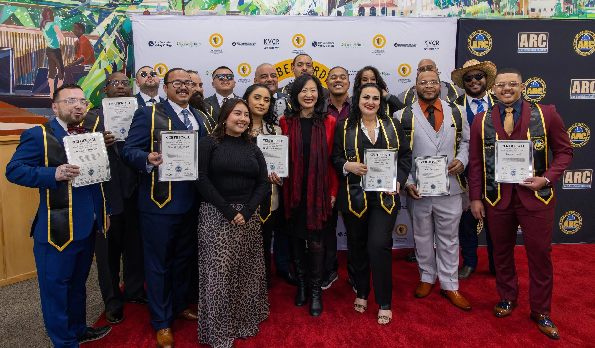
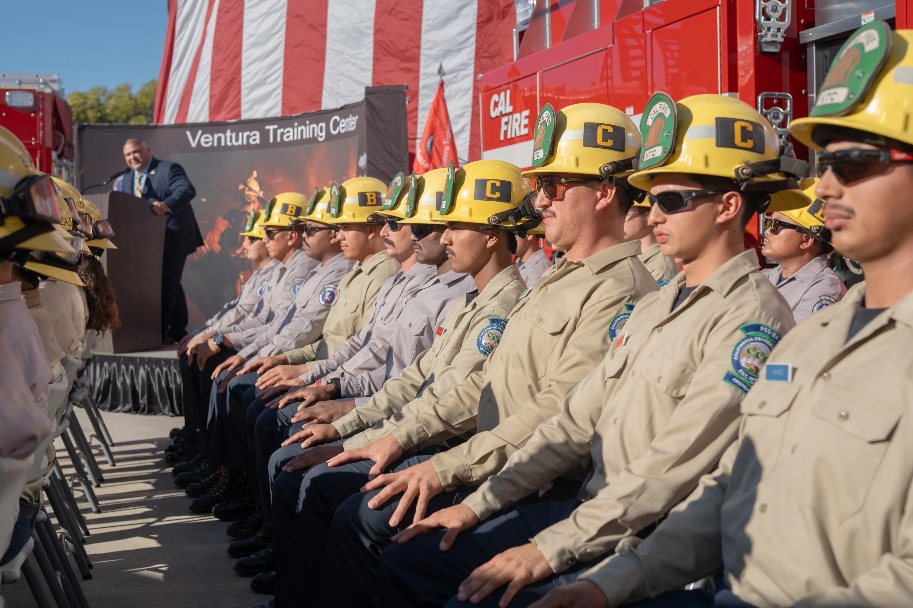

Dear Friends,
ARC's work centers on transitions. Each day, our teams guide currently incarcerated people away from criminal mindsets toward greater accountability for their actions. We transition incarcerated people from prison to freedom through our Ride Home program, and we guide newly free people towards sustainable lives by giving them the skills they need to function as productive citizens. Through the sharing of stories and the development of policy, we advocate for change that can transform the public's perceptions of folks whose lives have been affected by the criminal justice system.
In 2025, we faced a resurgence of challenges to hard-won progressive criminal justice reforms across many fronts. But we forever cleave to the hope that change is still possible, even if sometimes it feels like new roadblocks are appearing in our way.
We trained hundreds of members and made sure folks with lived experience were front and center as we advocated for legislation that would raise pay for incarcerated workers, ending slavery-like forced prison labor in California; expunge records to eliminate barriers to employment and housing once people have paid their debt to society; and ensure the compassionate treatment of incarcerated pregnant and parenting women.
We purchased and proudly opened our new headquarters—the Hope and Redemption Center in Echo Park—strengthening our roots in Southern California. The Center is already serving as a vital hub for community support where we offer people the tools they need to make recidivism a thing of the past. In our first year in our new home, which includes a soon-to-be state of the art Hollywood production studio through which we amplify the true meaning of hope and redemption, hundreds of people accessed our services, marking a significant step forward in our outreach and impact. We also successfully fostered a transition in our relationship with the California Department of Corrections and Rehabilitation (CDCR) to a mutually beneficial collaborative partnership.
It was also a time of transition for the Anti-Recidivism Coalition's leadership. As we celebrated ARC's former Executive Director Sam Lewis's leadership over the prior six years, we reflected on the thousands of lives changed for the better and looked ahead to what comes next. It was a profound moment of leaning into our mission, vision, and values when the Board appointed both of us – Jerome as ARC's first-ever formerly incarcerated Board Chair and Rob, a seasoned nonprofit professional who has worked with and on behalf of system impacted people on local, statewide, and national levels, as Interim Executive Director – to keep ARC moving forward. We're both proud to be walking side by side with our members, staff, and supporters today to accomplish ARC's goal of creating a more compassionate, equitable, and rehabilitative justice system.
We can't reflect on 2025 without well-deserved recognition for the nearly 1,000 incarcerated firefighters, many of whom were trained at ARC facilities, who battled the Palisades and Altadena Fires right as we kicked off the new year. Folks like Jose Angel Amezcua, who reflected in his moving op-ed, "[a]mid the smoke, ash, and destruction of the LA fires, people saw us as heroes, recognizing the good we could achieve when given a second chance." These brave individuals, like Jose, earned less than $11 a day and fought tirelessly to save people's lives and homes. The moment was eye-opening for many Americans – more than 15 million of whom watched our video content and social media reels. They got a different kind of glimpse into life inside, shared messages of gratitude, and generously donated $2M for ARC's Firefighter Fund to support members of incarcerated fire crews returning home.
We have a clear vision to expand our services and strengthen the organization's influence and sustainability, enabling us to reach even more communities impacted by incarceration. We will transform our vision into lasting change that not only benefits people who have experienced incarceration, but also our neighbors in every community throughout California and beyond. And we celebrate one additional transition, that of Rob Woronoff from Interim Executive Director to ARC's new permanent leader who, along with ARC's Board, staff, and members, will guide us into our exciting future.
This 2025 Impact Report offers a little preview of what comes next in our "Looking Ahead to 2027" section. The journey toward justice and redemption is ongoing, and ARC is more than up to the challenges we face moving forward. We are grateful and eager to share it all with you.
With gratitude and love,
ARC empowers formerly and currently incarcerated people to thrive by providing a support network, comprehensive reentry services, and opportunities to advocate for policy change. The long-lasting impact is making our communities safe, healthy, and whole.
A more conservative legislative and judicial environment took shape this year, marked by a resurgence of tough-on-crime policies, the expansion of the federal death penalty, increased immigration enforcement involving local law enforcement, and challenges to hard-won progressive reforms from the Supreme Court.
History offers a telling data point.
When people were given real support, real community, and real opportunity, they didn't go back. That is exactly what ARC has been building for over a decade. In a political moment that may close certain doors, ARC's proven model, deep community trust, and commitment to telling the human stories behind the statistics position the organization to lead criminal justice reform.
From Los Angeles County to the Sacramento region, ARC's programs and partnerships now reach across California — inside prisons and juvenile facilities, in transitional housing, on training campuses, and in the communities our members are returning to.
A ride. A job lead. A second chance that actually held. In 2025, ARC showed up for those moments — giving thousands across California the resources and support they needed to thrive.
Our programmatic work spans across multiple impact areas that interconnect to build an ecosystem of reentry support. These programs are intentionally designed to overlap, complementing and strengthening one another. From youth mentorship and mental health services inside juvenile detention centers, to career readiness programs, to policy initiatives, and beyond — we strive to ensure our programs meet the wide array of needs people impacted by incarceration and reentering society have, forging sustainable pathways that foster security, belonging, and success.

In March 2025, we celebrated the grand opening of our new headquarters — the Hope and Redemption Center in Echo Park. This groundbreaking center is designed to support formerly incarcerated individuals as they rebuild their lives and reintegrate into their communities.
The Hope and Redemption Center offers an array of workforce development programs, life coaching, mentoring, and therapy, empowering individuals to take the next steps in their journey.

When I was 18, I got caught up with the wrong crowd and ended up spending four years in L.A. County jail — years that felt like 'Hell on earth' and kept me away from my family and most of the beginning of my twenties. After my release, I connected with ARC, where I found real mentorship, guidance, and support from people who understood my experience. ARC helped me stay focused on school, supported me with a scholarship, and gave me a community that kept pushing me forward. Now I'm a junior accounting major at Howard University, proud to be writing a new chapter for my life — one where I'm holding the pen.
Our Inside Programs focus on building the knowledge, skills, and confidence our community members need to reenter the outside world before they leave detention. ARC staff, members, and volunteers visit the California prison system to provide rehabilitative programming and host policy workshops that bring hope to thousands of people who are incarcerated.
Fighting for a second chance and seeing a future of possibility doesn't start at re-entry — it starts on the inside. Our Hope and Redemption Team (HART) provides trauma-informed programming for incarcerated individuals across California, led by Life Coaches who are formerly incarcerated themselves.
Since 2017, the program has expanded statewide, now employing 28 Life Coaches and reaching far more institutions thanks to increased state support. HART offers group programs on emotional intelligence, criminal thinking, and parole readiness — all designed to help participants overcome barriers to rehabilitation and reentry. Life Coaches guide participants through these challenges, drawing on their own lived experience.
Nearly all participants rated HART highly, with most reporting reduced criminal thinking and fewer violent incidents. HART's impact also extends to reentry, with participants receiving transitional housing, job support, therapy, and mentorship through ARC — all of which are crucial for long-term reintegration.
ARC serves transitional-aged youth both inside juvenile facilities and in the community, providing mentorship, housing, and the support they need to build a life beyond the system.
"The most rewarding part of this work is watching a team grow increasingly effective in serving the people who need them most. A moment that stands out is when I received a call from a young man, now attending Howard University in D.C., reaching out to support our policy team. I was given the opportunity to hear his story on how far he had come since his release four years ago. For me, this represented all that is possible with the right community by one's side. He came from a dark place but was able to build himself up into a position where now he is reaching back to provide a service himself."
ARC's Sacramento office serves members across the region with case management, housing, workforce development, clinical therapy, and opportunities to advocate for change.
"The most rewarding thing is seeing people come home, start with nothing, and reach a stability of life that they would have never imagined. In 2025, a youth member we mentored inside came home, enrolled in barber school, got a job as a full-time barber, and now comes into our office to do free haircuts to our population that is fresh from coming home."
Members have access to supportive services including case management, trauma-informed counseling, housing, education, employment training, and mentorship. At its core, ARC members form a support network for each other as they make their way in the world.

background: linear-gradient(135deg, #1B2530 0%, #2a3340 100%); border: 2px dashed rgba(235,167,23,0.35); display: flex; flex-direction: column; align-items: center; justify-content: center; gap: 16px; position: relative; overflow: hidden; ">"Welcoming our people home to their community after incarceration is the most rewarding part of this work. Having members experience their first Laker game, their first birthday with family, their first real job — those moments remind you exactly why this work matters."
For nearly a decade, ARC has provided effective transitional housing services for formerly incarcerated individuals returning home to Los Angeles County, with on-site life skills programming, trauma counseling, education and employment guidance, and live-in mentors who promote independent living and wellness.
ARC launched its first transitional housing program, Bromont, in September 2014 in Sylmar, California, for individuals returning home from incarceration after long sentences of ten years or more. By providing wraparound services and a safe place to land, ARC works to reduce recidivism and improve reentry outcomes for formerly incarcerated individuals returning to Los Angeles County and beyond.
Launched in 2018 in partnership with CAL FIRE, the California Conservation Corps, and the California Department of Corrections and Rehabilitation, the Ventura Training Center (VTC) is an 18-month residential program that gives people who fought fires while incarcerated a pathway to build a career when they reenter society. Participants live on-site while receiving advanced firefighter training, certifications, and job readiness support. They also receive life skills programming, one-on-one counseling, health and wellness support, and educational opportunities. VTC opens doors to entry-level firefighting careers with state, federal, and local agencies.
Since its launch, the results have spoken for themselves. VTC has enrolled 481 participants since its inception, achieved 321 job placements, earned a 68% employment rate, and awarded 219 Firefighter Academy Certifications. For people who once earned less than $11 a day fighting California's most devastating fires, VTC turns that courage into a career.
Los Angeles County's Justice, Care, and Opportunities Department , in partnership with Amity Foundation and the Forestry and Fire Recruitment Program, selected ARC to oversee the new Los Angeles County Training Center (LACTC) in Calabasas. This residential vocational training program was modeled after the Ventura Training Center and was built for the next generation.
While living on-site, LACTC provides formerly incarcerated and former foster youth ages 18–27 with the certifications and the hands-on training they need to enter fire service, forestry, hazmat, and more. Participants receive everything needed to remove barriers and build a future, from free housing, meals, and life skills training, to case management, expungement assistance, and job placement support.
In 2025, LACTC made history by launching the first-ever all-women's fire crew cohort in the state of California.
Connecting members to leading businesses through internships, full-time roles, and union apprenticeship programs, while bridging members to academic opportunities including college tours and enrollment.
The Second Chance Apprenticeship Readiness Program is ARC's key vocational training initiative. This 11-week cross-sector partnership between the Los Angeles Unified School District and the LA/OC Building Trades offers every participant a livable wage during training before being placed directly into union apprenticeships.
The program delivers more than 240 hours of comprehensive training, including blueprint reading and hands-on instruction, ensuring participants are qualified and competitive candidates for their trade. By graduation, every participant holds MC3, OSHA 10, and CPR/First Aid certifications. Career pathways include apprenticeships in construction, carpentry, electrical work, welding, plumbing, and masonry.
"Coming home, I knew I wanted to build a different life, but I had to learn everything from scratch. I waited years for the opportunity to go through ARC's construction cohort, and it changed everything. ARC became a one-stop shop for support, guiding me through every question, every setback, and even being there when I needed a place to cry. Today, I'm working in construction, have my first job, my own apartment, and a strong sense of stability and pride. The day I signed my lease and sat in my space, I cried happy tears. Because for the first time, everything was mine."
The InCharge Electric Vehicle Maintenance Technician program launched in 2025 as a collaborative initiative between ARC and electric vehicle companies InCharge and LogiTech. Over a twelve-week period, participants attended classes, engaged in practical training, and received stipends to support their re-entry journey.
The program addresses both industry needs and social barriers, working closely with employers to ensure participants are seen as safe, certified, and well-prepared for the workforce. While some companies initially hesitated to hire individuals with felony records, most responded positively, especially after receiving reassurances and support letters from industry partners.
"I think being able to learn a skill, a specialized skill, in a field that's growing exponentially, and that's going to continue to grow, it opens up such a wide world for us to be able to do that — and not only that, make a sustainable living. What was a challenge for me getting out was being able to get a job that I can make a decent pay, where I can provide for myself and for my family."
In 2025, ARC showed up in Sacramento, on social media, and everywhere in between fighting for policies that change lives. With hundreds of members training, organizing and advocating for legislation our coalition was a powerful and resilient force. At the same time, ARC's digital presence spoke out and told stories that changed minds. More people than ever were encountering the real stories of formerly incarcerated people, and seeing them differently.
From viral reels about incarcerated firefighters to policy explainers that moved constituents to contact their legislators, ARC's communication work created change.
With more than 650 ARC members trained in policy and 330 engaged in active advocacy, our coalition was a powerful force for systemic change — even in a shifting political landscape. Hundreds of members showed up, spoke out, and helped shape the policies that govern their lives and the lives of people still inside.
"Seeing the Governor sign our three fire hand crew bills felt like a real culmination of ARC's work — uplifting formerly incarcerated young people and making sure their contributions were recognized. It was a reminder that when directly impacted people are supported and invested in, real change is possible."
By meeting people where they are on social media, ARC turned scrolling into storytelling. Humor, trending audio, and compelling testimonials brought the realities of reentry to audiences who might never have sought them out. As posts went viral and our followers grew, a wider public began to see formerly incarcerated people differently. Every reel, caption, and comment section became a place to challenge stigma, celebrate resilience, and make the case for second chances. This increased visibility also resulted in tangible policy change for prison system reform, helping build momentum for the passing of AB 247, raising wages for incarcerated firefighters.
From national outlets to local coverage, the stories of our members and the impact of our programs continued to change hearts, minds, and the broader narrative around second chances.
As the destructive Palisades Fire ripped through Los Angeles County in early January 2025, nearly 1,000 incarcerated firefighters battled the blaze. They earned less than $11 a day. They make up 30% of California's firefighters. Until recently, they had no path to becoming professional firefighters upon their reentry.
Amid the smoke, ash, and destruction of the LA fires, people saw us as heroes — recognizing the good we could achieve when given a second chance.— Jose Angel Amezcua, in CalMatters

background: linear-gradient(135deg, rgba(42,24,16,0.9) 0%, rgba(10,17,25,0.97) 100%); border: 2px dashed rgba(235,167,23,0.35); display: flex; flex-direction: column; align-items: center; justify-content: center; gap: 16px; position: relative; overflow: hidden; ">In 2018, ARC helped launch a program to fix the no-path-forward problem. Today, our firefighting program has enrolled nearly 450 formerly incarcerated people, providing certifications, record expungement, EMT licenses, and jobs in both Cal Wildlands firefighters and municipal fire departments. ARC's social media presence contributed to critical narrative-changing conversations about incarcerated firefighters, reaching 15M+ social media accounts, with reels pulling in as many as 18M views.
By the end of 2025, ARC welcomed Prince Harry, Duke of Sussex, who visited the Ventura Training Center to see firsthand how the program trains formerly incarcerated people to continue their careers as firefighters.
We are proud to see our VTC alumni go on to become leaders at local fire stations across the state, defending our communities from the unimaginable. Kurt Pinelli, a 2019 VTC graduate, was recently promoted to Captain at the Santa Clara Unit this year. Earl Thomas, from our second VTC graduating class, also a 2019 alumnus, started out as a seasonal firefighter upon reentry in San Benito Monterey, at the Bradley Fire Center for two years. Then, he was promoted to Fire Apparatus Engineer in 2022 at the Bear Valley Station, until his promotion to Captain of the San Benito Monterey Uni in 2025. Jason Moyer graduated in 2021, and spent a year working as a seasonal firefighter at Covelo Fire Station in Mendocino, before becoming a Fire Apparatus Engineer in 2022 at the Laytonville Fire Station. Now, entering 2026, Jason has been promoted to Captain at the Glenwood Fire Center in San Manteo.
Promotions like Kurt’s, Earl’s, and Jason’s demonstrate how investing in second chances, with the right support and opportunities, creates lasting impact for stronger and safer communities.
"What I value most is turning my lived experience into something meaningful for others. I think about Dakota — working our front desk during the week, traveling from LA to Santa Rosa on weekends to attend Firefighter Academy, building a better future for himself and using his past as motivation. It is incredibly rewarding to witness this level of determination in a young person and to know that ARC has played a role in creating opportunities that support individuals in reaching the full potential they were born with."
FY25 revenue and expense breakdown.
They happen because people like you show up. Your support makes it possible for ARC to walk alongside every member, fight for every policy win, and change the story the public hears about formerly incarcerated people. Together, we're building a criminal legal system that is more just, more compassionate, and better for all of us.